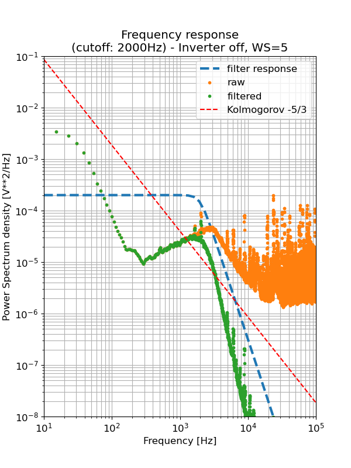

Φιλτρα συχνοτητων
Τ.Ε.Ι. Κρητης
Νικολας Τοροσιαν
2024-05-28 Τρι 00:00
Καθηγητες
- Επιβλέπον καθηγητής
- Παπαδάκης Νικόλας
- Υπ. Εργαστηρίου Α.Π.Ε
- Κονταξάκης Κωv/νος
Τι ειναι σημα
- Συνεχές / Διακριτό
- Ημιτονοειδές / Παλμικό
- δυαδικό
- π.χ. ’καλημέρα’ == 11001110 10111010 11001110 10110001 11001110 10111011 11001110 10110111 11001110 10111100 11001110 10110101 11001111 10000001 11001110 10110001
- Να εμπεριέχει πληροφορία
- Δηλαδή διακριτές διαφορές στην ισχύ ή/και την συχνότητα
- Περιοδική συμπεριφορά
- Η επανάληψη στο χρόνο είναι από τα σημαντικότερα χαρακτηριστικά των σημάτων.
χρησεις
- Ως μέτρο αναφοράς και σε μετρητικές συσκευές
- Επικοινωνία-Διαδίκτυο
- Για συμπίεση πληροφορίας
συσκευες / επικοινωνια
Μετρητής ταλαντώσεων

Συσκεύη κουρδίσματος

Καλώδιο επικοινωνίας
συμπιεση / κωδικοποιηση
Με τις απαιτήσεις για ολοένα και περισσότερο όγκο πληροφορίας προς κωδικοποίηση και αποστολή σε συνεχώς μεγαλύτερες αποστάσεις, αναπτύσσονται βελτιστοποιήσεις αλλά και νέοι αλγόριθμοι για αυτό τον σκοπό. Η παρακάτω φράση παρουσιάζεται κωδικοποιημένη χρησιμοποιώντας τον Κώδικα (Σήματα) Morse. Αποτέλεσε την πρώτη μορφή επικοινωνίας εξ’ αποστάσεως με την χρήση συνεχόμενων καλωδίων.
Despite the fact that I analyzed nine problems correctly, no one congratulated me. But when I made one mistake, everyone started laughing. This means that even if a person is successful, society will notice his slightest mistake. And they’ll like that.
So don’t let criticism destroy your dreams. The only person who never makes a mistake is someone who does nothing. – Albert Einstein
-.././.../.--./../-/. -/..../. ..-./.-/-.-./- -/..../.-/- .. .-/-./.-/.-../-.--/--.././-.. -./../-./. .--./.-./---/-.../.-.././--/... -.-./---/.-./.-././-.-./-/.-../-.--/--..-- -./--- ---/-./. -.-./---/-./--./.-./.-/-/..-/.-../.-/-/./-.. --/./.-.-.- -.../..-/- .--/...././-. ..
--/.-/-../. ---/-./. --/../.../-/.-/-.-/./--..-- ./...-/./.-./-.--/---/-./. .../-/.-/.-./-/./-.. .-../.-/..-/--./..../../-./--./.-.-.- -/..../../... --/./.-/-./... -/..../.-/- ./...-/./-. ../..-. .- .--././.-./.../---/-. ../... .../..-/-.-./-.-././.../.../..-./..-/.-../--..--
.../---/-.-./.././-/-.-- .--/../.-../.-.. -./---/-/../-.-./. ..../../... .../.-../../--./..../-/./.../- --/../.../-/.-/-.-/./.-.-.- .-/-./-.. -/...././-.--/.----./.-../.-.. .-../../-.-/. -/..../.-/-/.-.-.-
.../--- -../---/-./.----./- .-.././- -.-./.-./../-/../-.-./../.../-- -.././.../-/.-./---/-.-- -.--/---/..-/.-. -../.-././.-/--/.../.-.-.- -/..../. ---/-./.-../-.-- .--././.-./.../---/-. .--/..../--- -././...-/./.-. --/.-/-.-/./... .- --/../.../-/.-/-.-/. ../...
.../---/--/./---/-./. .--/..../--- -../---/./... -./---/-/..../../-./--./.-.-.-
Εργαστηριακη εγκατασταση

αισθητηρες ανεμου
Διαφορικός αισθητήρας πίεσης
- Μοντέλο: xxx-XXX Some
- Εύρος καταγραφής: xxx-XXX Some
Αισθητήρας ταχύτητας ανέμου (Pitot-tube)

- Μοντέλο: xxx-XXX Some
- Εύρος καταγραφής: xxx-XXX Some
δεδομενα εγκαταστασης
Παρακάτω συγκρίνονται τα σήματα για 0 και 10 m/s αριστερά και δεξιά αντίστοιχα. Φαίνεται ξεκάθαρα η επιρροή από την Η/Μ ακτινοβολία του μετασχηματιστή.


καταγραφη
Μετά την καταγραφή κάποιου σήματος και πριν την όποια επεξεργασία, συνηστάται να ελεγχθεί για τυχών αλλοίωση λόγω ανεπαρκούς συχνότητας καταγραφής και του θεωρήματος δειγματοληψίας Nyquist.

συχνοτητα καταγραφης
Για τον προσδιορισμό της ελάχιστης συχνότητας που δεν αλλοιώνει την πληροφορία του ανέμου κατά την καταγραφή εφαρμόστηκε η τεχνική του αποδεκατισμού. Επιλέγοντας ένα δείγμα κάθε \(X\) καταγεγραμμένες τιμές του αρχικού. Ο συντελεστής \(X\) ονομάζεται και συντελεστής αποδεκατισμού (decimation factor), όπου \(X \in \mathbb{N} \).
φιλτρα συχνοτητων
Όλα τα φίλτρα που θα παρουσιαστούν ονομάζονται φίλτρα διέλευσης χαμηλών συχνοτήτων και η συχνότητα κατακριμνησμού ορίζει την μέγιστη συχνότητα που δεν θα επηρεαστεί από το φίλτρο. Συχνότητες μεγαλύτερες από αυτήν απομειώνονται, ώστε η ισχύ των δειγμάτων να είναι μικρότερη από το φάσμα των συχνοτήτων που βρίσκονται στην περιοχή διέλευσης.


IIR
Φίλτρα άπειρης κρουστικής απόκρισης
- Μεγάλη μείωση της ισχύος εξόδου άμεσα.
- Επιρροή των συχνοτήτων στο φάσμα διέλευσης χωρίς περαιτέρω επεξεργασία.(διαφορά φάσης)

FIR
Φίλτρα πεπερασμένης κρουστικής απόκρισης
- Καθυστέρηση από την συχνότητα κατακρημνισμού και την απομείωση του φάσματος.
- Ταχύτερος υπολογισμός της συνάρτησης που το εκφράζει και του σήματος εξόδου.

συγκριση φιλτρων
Φίλτρα διέλευσης χαμηλών συχνοτήτων
IIR ☟
FIR ☟
διάφορες αποκρίσεις ☟


συγκριση αποτελεσματων
τυπικη αποκλιση / ελεγχος φιλτρου
Τυπική απόκλιση σημάτων πριν και μετά τα φίλτρα για κάθε πηγή ανέμου.


μεσιανη τιμη / ελεγχος φιλτρου
Μεσιανή τιμή σημάτων πριν και μετά τα φίλτρα για κάθε πηγή ανέμου.


συμπερασματα
Εδώ καλό είναι να πω για την δυνατότητα των IIR για καλύτερη ανάλυση αλλά και μεγαλύτερο χρόνο εκτέλεσης για μεγάλα σετ δεδομένων.
- IIR
- Υπέρ
- ☑ ανάλυση σήματος εξόδου
- ☑ τάξη φίλτρου (2)
- Κατά
- ☑ Χρόνος εκτέλεσης
- ☑ καθυστέρηση στο σήμα εξόδου
- Υπέρ
- FIR
- Υπέρ
- ☑ Χρόνος εκτέλεσης
- ☑ ελαχιστοποίηση καθυστέρησης στο σήμα εξόδου
- Κατά
- ☑ ανάλυση σήματος εξόδου
- ☑ τάξη φίλτρου (22)
- Υπέρ
Συνδυασμός φίλτρων:
Πρώτα θα πρέπει να εφαρμόσουμε το FIR για τον καθαρισμό της πληθώρας του θορύβου με χαμηλή ανάλυση και έπειτα το IIR απομειώνοντας φάσματα θορύβου που αδυνατούμε με το FIR.
Ευχαριστω για τον χρονο σας
- IIR